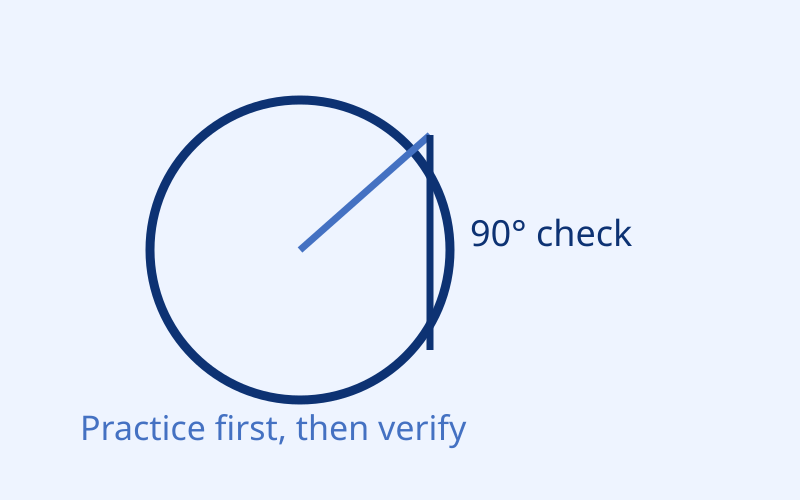

Game Path
把规则放进图形挑战：用判断与即时反馈把概念变成习惯。

挑战 1：切线角度判断
问题：切线与过切点半径的夹角是多少度？
挑战 2：面积变化快算
当半径从 r 变为 2r 时，面积会变成原来的多少倍？
提示：面积公式 A = pi * r^2。
把规则放进图形挑战：用判断与即时反馈把概念变成习惯。

问题：切线与过切点半径的夹角是多少度？
当半径从 r 变为 2r 时，面积会变成原来的多少倍？
提示：面积公式 A = pi * r^2。